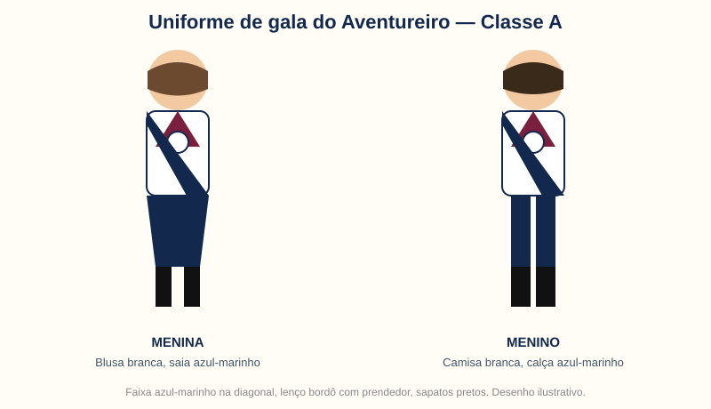

O que é o Clube de Aventureiros
O Clube de Aventureiros é um ministério da Igreja Adventista do Sétimo Dia para crianças de 4 a 9 anos. Ele foi criado para ajudar os pais na sua responsabilidade mais importante: ser os primeiros professores e evangelizadores dos seus filhos, com uma parceria entre família, igreja e clube.
The Adventurer Club is a Seventh-day Adventist ministry for kids ages 4–9, created to assist parents as their children's primary teachers and evangelizers.
O programa começou como piloto na Divisão Norte-Americana em 1990 e se tornou um programa mundial oficial em 1991. Desde então, crianças do mundo inteiro usam o mesmo voto, a mesma lei, a mesma bandeira, o mesmo lenço e o mesmo currículo, adaptado à idade de cada classe.
Princípio do clube: “Porque Jesus me ama, eu sempre farei o meu melhor.” / “Because Jesus loves me, I will always do my best.”
Lei do Aventureiro: ser obediente, puro, leal, bondoso, respeitoso, atencioso, prestativo, alegre, pensativo e reverente — valores que aparecem em cada encontro, não só na teoria.
O lenço do Aventureiro
Aqui nos Estados Unidos, são dois lenços principais, e a cor já conta a idade e a etapa da criança.

Azul claro
Little Lamb / Discovery. O lenço dos menores, de cerca de 4 anos. É o primeiro lenço, o da descoberta, quando a criança começa a conhecer o clube com os pais ao lado.
Bordô / vinho
Aventureiros e equipe. O lenço oficial do Aventureiro, triangular, com borda branca e o emblema mundial na parte de trás, usado com o prendedor do clube.
A história e o significado
O lenço triangular tem três pontas, que lembram a Trindade — Pai, Filho e Espírito Santo — e o compromisso completo da criança: com Deus, com a família e com o próximo.
A cor bordô representa a realeza: os Aventureiros são filhos do Rei. E, na tradição do clube, o vinho também lembra o sangue de Jesus derramado na cruz para salvar cada criança e toda a família.
O lenço não se compra pronto e se usa de qualquer jeito: ele é recebido na admissão de lenço, na investidura, depois que a criança aprende o voto, a lei e o hino. Por isso, vestir o lenço é um momento de orgulho — é dizer, sem palavras, “eu sou Aventureiro”.
As cores da bandeira do clube contam a mesma história: amarelo-ouro para a excelência, branco para a pureza, azul para a lealdade a Jesus, aos pais e à igreja, e bordô para a realeza.
O uniforme

A história e o princípio
O uniforme torna o clube real para a criança. Ele é o emblema de um padrão, constrói lealdade ao clube, traz um senso de comunidade e deve ser usado sempre limpo, arrumado e com orgulho.
Uniforme de gala, Classe A, nos EUA:
- Meninas: blusa branca com gola Peter Pan, saia ou jardineira azul-marinho plissada.
- Meninos: camisa branca de colarinho, calça azul-marinho.
- Ambos: meias azul-marinho ou brancas conforme o clube, sapatos pretos, lenço bordô com prendedor, e faixa azul-marinho na diagonal, do ombro direito ao quadril esquerdo.
- Na faixa vão as estrelas de classe, as insígnias das especialidades, os pins e os patches de eventos — a história da criança no clube, costurada no uniforme.
- Para atividades de campo, o clube usa o uniforme de campo, mais simples, com camiseta do clube.
O uniforme não é vaidade: é igualdade. Dentro do clube, ninguém se destaca pela roupa que tem em casa — todos vestem o mesmo, com o mesmo padrão, e se reconhecem como parte de uma família mundial, do Brasil aos Estados Unidos.
Na investidura, no fim do ano, a criança recebe a insígnia da classe, a estrela e as especialidades conquistadas — e o uniforme conta, na frente de todos, o que ela aprendeu naquele ano.
Quer ver de perto?
Venha a um encontro no calendário e veja o lenço, o uniforme e as classes na prática.
Ver o calendário Inscrição